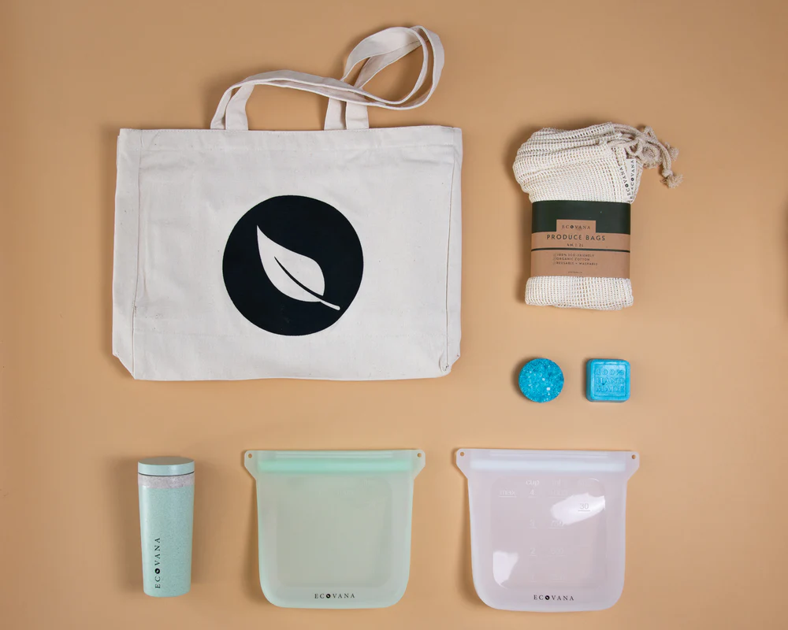
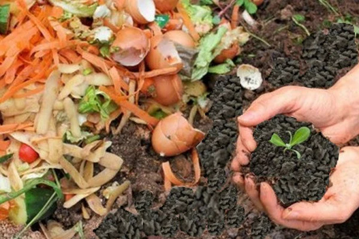
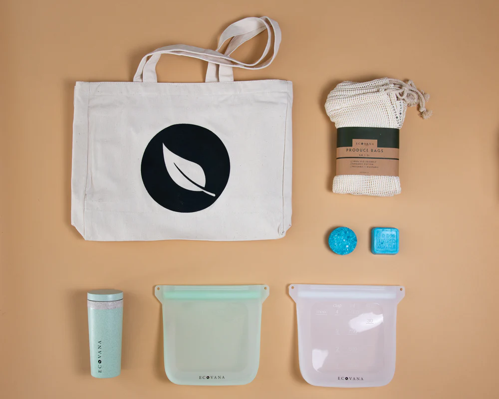
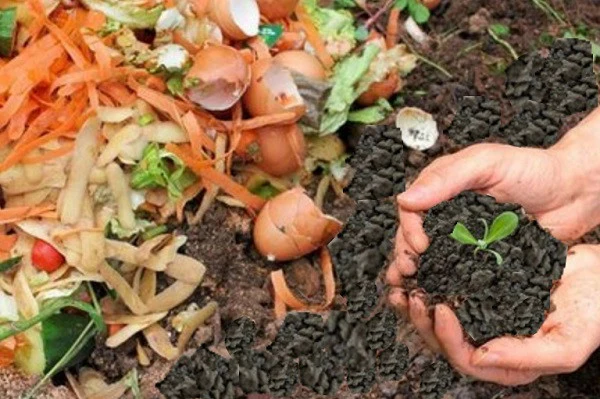

🌍 About Me
👋 Hi! I'm Chong Hao
Welcome to my zero-waste journey! I’m a student deeply passionate about sustainability and doing my part for the planet. Ever since I discovered how much waste we generate—and how little gets recycled—I’ve committed to living more mindfully and minimizing my environmental impact.
♻️ Why I Chose a Zero-Waste Lifestyle
It all started with a school project on plastic pollution. I was stunned to learn how a single person can produce over 1,600 pounds of waste in a year. That knowledge inspired me to start small: saying no to straws, rethinking how I shop, and questioning what I throw away. For me, zero-waste isn’t about perfection—it’s about progress.
🌱 My Montly accomplishments of Green Habits
🖼️ My Zero-Waste Moments
 



📈 My Eco Goals
- Host a clothes-swapping event for friends.
- Reduce my digital footprint (unsubscribing, deleting old files).
- Grow a windowsill herb garden using composted soil.
💬 Let’s Connect!
I hope my story inspires you to take your first steps toward a more sustainable lifestyle. You don’t have to be perfect—just start somewhere. Every small change makes a difference!